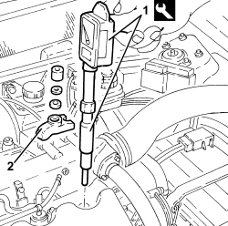

0510A10 CYLINDER COMPRESSION - CHECK FOR LOOSE SPARK PLUGS OR INJECTORS
- Path
- Procedures > 05 DIAGNOSTICS > 0510 VARIOUS CHECKS > 0510A CHECKS ON ENGINE > 0510A10 CYLINDER COMPRESSION - CHECK FOR LOOSE SPARK PLUGS OR INJECTORS
- Kind
- repair procedure (removal / refitting; the operation number is the code)
- Applies to
- engines: 1.8, 1.9 JTS, 2.2 JTS, 1.9 JTD 8V, 1.9 JTD 16V, 2.4 JTD 20V; all production periods
- Interactive page
- https://sloeber94.github.io/elrnDB/alfa/159/en/#/939010387
Applies to: engines: 1.9 JTD 16V, 2.4 JTD 20V; all production periods
- Detach the engine management control unit electrical connections.
Op. 1060G80 DIESEL ELECTRONIC INJECTION CONTROL UNIT - .R
- Fit the tool on the compression test equipment.
Tool | Description | Function | Validity |
|---|---|---|---|
1870811001 | Raccordo | Prova compressione cilindri | 1.9 JTD 8V 1.9 JTD16V 1.9 JTD 20V |
Tool | Description | Function | Validity |
|---|---|---|---|
1870793000 | Falso iniettore | Prova compressione cilindri | 1.9 JTD 8V 1.9 JTD 16V 2.4 JTD 20V |
1. Insert the test equipment into the injector seat.
2. Block the test equipment with the bracket.

Applies to: engines: 1.9 JTD 16V, 2.4 JTD 20V; all production periods
- Turn the engine over several times, using the starter motor, keeping the accelerator and clutch pedals pressed.
- Repeat the test on the remaining cylinders, taking care to zero the instrument pointer each time.
- Check that there is not a great difference between the pressure readings for the cylinders.
- Secure the electrical connections to the engine management control unit.
Applies to: engines: 1.9 JTS, 2.2 JTS; all production periods
- Disconnect the engine management control unit electrical connections.
Op. 1056F82 CONTROL UNIT SINGLE OF INJECTION IGNITION SYSTEM R R
- Insert the test equipment into one of the spark plug seats.
- Turn the engine over several times, using the starter motor, keeping the accelerator and clutch pedals pressed.
- Repeat the test on the remaining cylinders taking care to zero the instrument each time.
- Check that there is not a great difference between the pressure readings for the cylinders.
- Connect the electrical connections to the engine management control unit.
Applies to: engines: 1.9 JTD 8V; all production periods
- Detach the engine management control unit electrical connections.
Op. 1060G80 DIESEL ELECTRONIC INJECTION CONTROL UNIT - .R
- Fit the tool on the compression test equipment.
Tool | Description | Function | Validity |
|---|---|---|---|
1870811001 | Raccordo | Prova compressione cilindri | 1.9 JTD 8V 1.9 JTD16V 1.9 JTD 20V |
Tool | Description | Function | Validity |
|---|---|---|---|
1870793000 | Falso iniettore | Prova compressione cilindri | 1.9 JTD 8V 1.9 JTD 16V 2.4 JTD 20V |
1. Insert the test equipment into the injector seat.
2. Block the test equipment (false injector) with the bracket.

Applies to: engines: 1.9 JTD 8V; all production periods
- Turn the engine over several times using the starter motor, keeping the accelerator and clutch pedals pressed.
- Repeat the test on the remaining cylinders, taking care to zero the instrument pointer each time.
- Check that there is not a great difference between the pressure readings for the cylinders.
- Attach the electrical connections to the engine management control unit.
Applies to: engines: 1.8; all production periods
- Disconnect the engine management control unit electrical connections.
Op. 1056F82 CONTROL UNIT SINGLE OF INJECTION IGNITION SYSTEM R R
- Insert the test equipment into one of the spark plug seats.
- Turn the engine over several times, using the starter motor, keeping the accelerator and clutch pedals pressed.
- Repeat the test on the remaining cylinders taking care to zero the instrument each time.
- Check that there is not a great difference between the pressure readings for the cylinders.
- Connect the electrical connections to the engine management control unit.
Topics linked from this page (2)
- 1056F82 CONTROL UNIT SINGLE OF INJECTION IGNITION SYSTEM R R
- 1060G80 DIESEL ELECTRONIC INJECTION CONTROL UNIT - .R